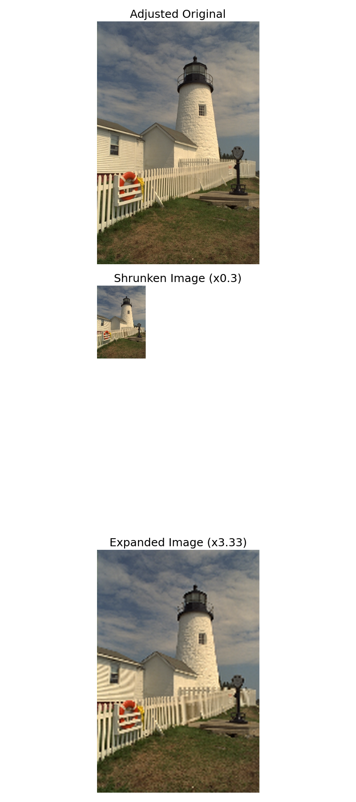

Resize Module#
We use the resize module to shrink and expand a 2D image.
You can download this example at the tab at right (Python script or Jupyter notebook.
Required Libraries#
We import the required libraries, including NumPy for numerical computations, Matplotlib for plotting, and the custom resize function from the splineops package.
Utility Functions#
Adjustment of an image resolution using scipy and splineops.
def adjust_image_size_for_shrink(data, shrink_factor):
"""
Adjust the image size so that after shrinking and re-expanding,
the final dimensions match this 'adjusted image' exactly.
Steps:
1) We want H' * shrink_factor to be integer (same for W').
2) Choose H' as nearest multiple of 1/shrink_factor to original H,
similarly for W'.
3) Use ndimage.zoom to resample to (H', W').
"""
h, w = data.shape[:2]
c = data.shape[2] if data.ndim == 3 else 1
inv_s = 1.0 / shrink_factor
# Determine new height
new_h = round(round(h / inv_s) * inv_s)
# Determine new width
new_w = round(round(w / inv_s) * inv_s)
new_h = max(new_h, 1)
new_w = max(new_w, 1)
# Scale factors for ndimage.zoom
scale_factor_h = new_h / h
scale_factor_w = new_w / w
if c == 1:
data_zoomed = ndi_zoom(data, (scale_factor_h, scale_factor_w), order=1)
else:
# For RGB: zoom each spatial dimension, but keep channels unchanged
data_zoomed = ndi_zoom(data, (scale_factor_h, scale_factor_w, 1), order=1)
return data_zoomed
def resize_image_splineops(data, zoom_factor, degree=3, extension_mode="mirror"):
"""
Wrapper around splineops' resize function for a 3-channel (RGB) image.
Assumes 'data' is float64 in [0, 1].
"""
resized_channels = []
for ch in range(data.shape[2]):
resized_ch = resize(
data[:, :, ch],
zoom_factors=zoom_factor,
degree=degree,
modes=extension_mode,
method="interpolation"
)
resized_channels.append(resized_ch)
resized_image = np.stack(resized_channels, axis=-1)
# Clip to [0,1], then convert to uint8
resized_image = np.clip(resized_image, 0.0, 1.0)
return (resized_image * 255.0).astype(np.uint8)
Basic Resizing Example#
Load a simple 2D image, shrink and expand it using splineops interpolation.
# 1) Load and normalize the original image
url = 'https://r0k.us/graphics/kodak/kodak/kodim19.png'
response = requests.get(url)
img = Image.open(BytesIO(response.content))
data = np.array(img, dtype=np.float64) # shape: (H, W, 3)
data_normalized = data / 255.0 # Convert to [0,1]
# 2) *Initially* shrink the image to reduce its overall size
initial_shrink_factor = 0.8
data_smaller = ndi_zoom(data_normalized, (initial_shrink_factor, initial_shrink_factor, 1), order=1)
# 3) Next, adjust the now-smaller image so that our subsequent shrink-and-expand
# steps (by shrink_factor below) will match the final shape exactly.
shrink_factor = 0.3
adjusted_data = adjust_image_size_for_shrink(data_smaller, shrink_factor)
adjusted_data_uint8 = (adjusted_data * 255).astype(np.uint8)
# 4) Shrink the adjusted image via splineops
shrunken_image = resize_image_splineops(
adjusted_data,
zoom_factor=shrink_factor,
degree=3,
extension_mode="mirror"
)
# 5) Place the shrunken image onto a white canvas the size of the adjusted image
H_adj, W_adj, _ = adjusted_data_uint8.shape
canvas_shrunken = np.ones((H_adj, W_adj, 3), dtype=np.uint8) * 255 # white background
H_shr, W_shr, _ = shrunken_image.shape
canvas_shrunken[:H_shr, :W_shr, :] = shrunken_image
# 6) Expand the shrunken image back to the adjusted image dimensions
expanded_image = resize_image_splineops(
shrunken_image.astype(np.float64) / 255.0, # re-normalize to [0,1]
zoom_factor=1.0 / shrink_factor,
degree=3,
extension_mode="mirror"
)
# 7) Plot the three images in one figure, stacked vertically
# to achieve a large, clear display. We also increase font sizes.
plt.rcParams.update({
"font.size": 14, # Base font size
"axes.titlesize": 18, # Title font size
"axes.labelsize": 16, # Label font size
"xtick.labelsize": 14,
"ytick.labelsize": 14
})
fig, axes = plt.subplots(3, 1, figsize=(8, 18))
axes[0].imshow(adjusted_data_uint8)
axes[0].set_title("Adjusted Original")
axes[0].axis("off")
axes[1].imshow(canvas_shrunken)
axes[1].set_title(f"Shrunken Image (x{shrink_factor})")
axes[1].axis("off")
axes[2].imshow(expanded_image)
axes[2].set_title(f"Expanded Image (x{1/shrink_factor:.2f})")
axes[2].axis("off")
plt.tight_layout()
plt.show()

Aliasing#
Note that we observe aliasing in the expanded image.
Aliasing: When we shrink an image below the Nyquist limit for its higher-frequency details, those details cannot be represented adequately at the smaller sampling rate. As a result, they become “aliased”—folded back into lower-frequency components. When we then re-expand the image, these aliased components manifest as artificial wave-like or Moiré patterns, since the original high-frequency content is irretrievably lost in the shrinking step.
In practice, one might mitigate aliasing by pre-filtering or low-pass filtering before downsampling, but here we demonstrate straightforward interpolation, which can reveal aliasing artifacts in areas with fine detail.
Total running time of the script: (0 minutes 1.776 seconds)